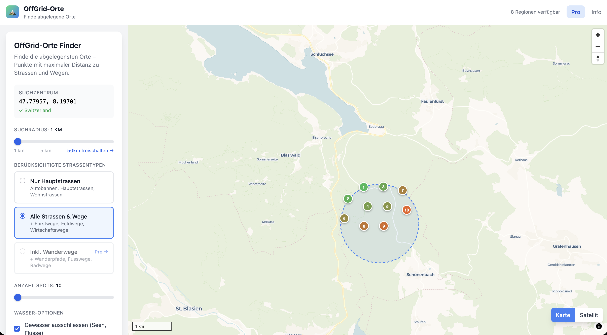

Wildcampen · Fotografie · Off-Grid
Wir berechnen die exakten Punkte mit maximaler Entfernung zu jeder Strasse – und liefern dir die GPS-Koordinaten. Basierend auf OpenStreetMap-Daten für die Schweiz, Österreich und Deutschland.
Kostenlos testen · Keine Anmeldung nötig

So funktioniert's
Klicke irgendwo auf die Karte, um dein Suchzentrum festzulegen. Funktioniert überall – von den Schweizer Alpen bis zum Schwarzwald.
Wähle Suchradius, Geländetyp, Waldbedeckung und Gewässernähe. Der Algorithmus erledigt den Rest.
Exportiere als GPX, GeoJSON oder CSV. Navigiere direkt zu deinem abgelegenen Spot mit jedem GPS-Gerät oder App.
Entwickelt für
Ob du einen Wildnis-Rückzugsort planst, Locations scoutest, oder dich auf das Unerwartete vorbereitest.
Finde legale Biwakplätze abseits der Wege. Filtere nach Waldbedeckung und Gewässernähe – ideal für mehrtägige Touren.
Keine Menschen. Keine Autos. Keine Stromleitungen. Nur unberührte Landschaften, die auf deine Linse warten.
Identifiziere systematisch Rückzugsorte mit Waldbedeckung, Wasserquelle und Geländefiltern.
Preise
Starte kostenlos. Upgrade wenn du mehr brauchst.
Fragen
OffGrid-Orte nutzt OpenStreetMap-Strassendaten und einen Distanztransformations-Algorithmus, um die exakten Punkte mit maximaler Entfernung zu Strassen in deinem gewählten Suchgebiet zu berechnen. Der Algorithmus erstellt ein Raster über dein Gebiet, kartiert alle bekannten Strassen und findet dann die Koordinaten mit der grössten Distanz zur nächsten Strasse. Die Ergebnisse sind auf den Meter genau und werden als GPS-Koordinaten geliefert, die du direkt auf dein Navigationsgerät exportieren kannst.
Ja, OffGrid-Orte ist optimiert für die DACH-Region (Deutschland, Österreich, Schweiz) und die Alpen. Die OpenStreetMap-Daten sind hier besonders detailliert und werden ständig von der Community aktualisiert. Das Tool funktioniert überall im DACH-Raum, wo OSM-Strassendaten verfügbar sind.
Absolut. OffGrid-Orte ist unter anderem für Wildcamper konzipiert. Nutze den Waldbedeckungs-Filter für Spots unter Bäumen und den Gewässernähe-Filter, um in der Nähe einer Wasserquelle zu bleiben – ideal für Biwakplätze. Beachte immer die lokalen Regelungen zum Wildcampen. In der Schweiz ist Biwakieren oberhalb der Waldgrenze generell erlaubt, in Österreich und Deutschland gelten unterschiedliche Landesregeln.
Ja, der kostenlose Plan beinhaltet einen 5 km Suchradius, bis zu 10 Spots pro Suche, einen Höhenfilter und CSV-Export. Der Pro-Plan ist eine einmalige Zahlung von 5 € (kein Abo) und schaltet 50 km Radius, 50 Spots, Wald- und Wasserfilter, Wanderwege-Modus und GPX/GeoJSON-Export frei.
OffGrid-Orte nutzt Strassen-, Weg-, Wald- und Gewässerdaten von OpenStreetMap – der grössten offenen geografischen Datenbank der Welt, gepflegt von einer Community mit über 10 Millionen Mitwirkenden. Das bedeutet, die Daten werden ständig verbessert und decken auch abgelegene Regionen ab. Es werden keine persönlichen Daten gesammelt oder gespeichert, wenn du die App nutzt.
Verfügbare Regionen
Unsere Daten decken aktuell diese Regionen ab. Weitere folgen.
Keine Anmeldung. Keine Kreditkarte. Einfach klicken und erkunden.
App öffnen